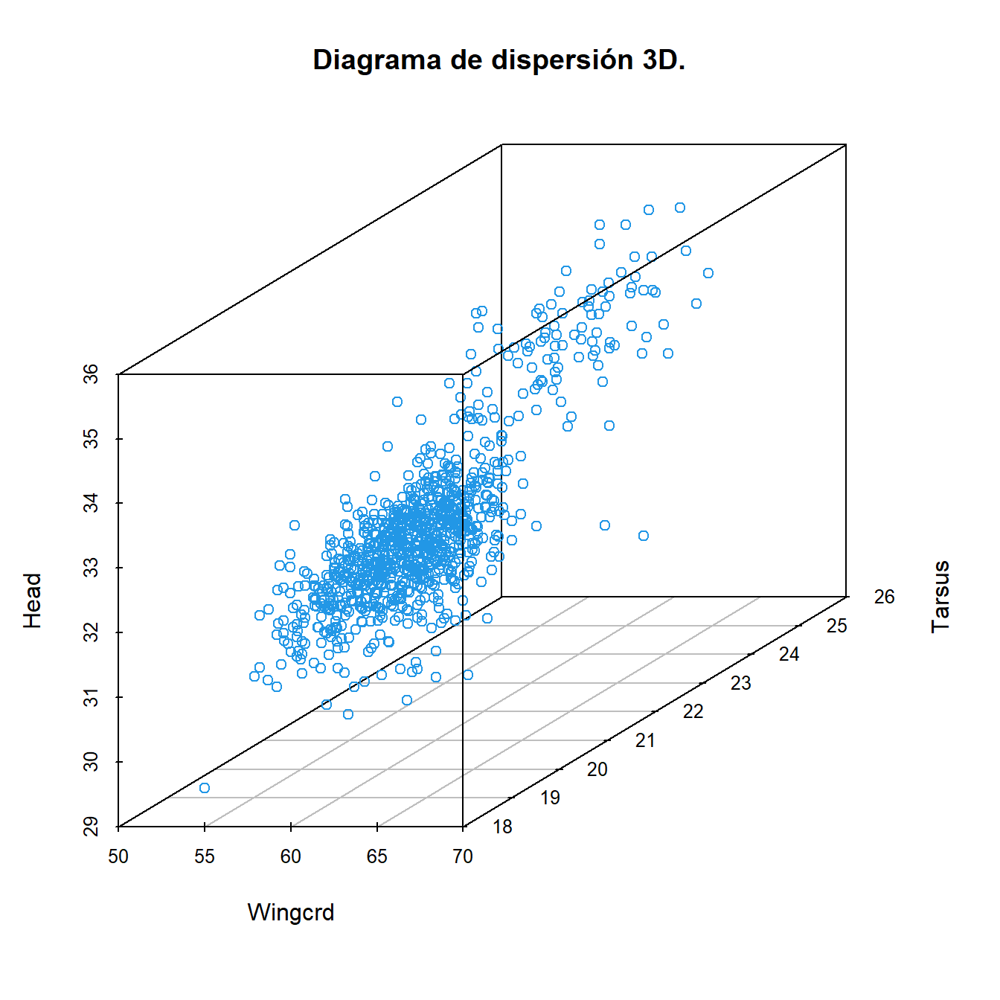
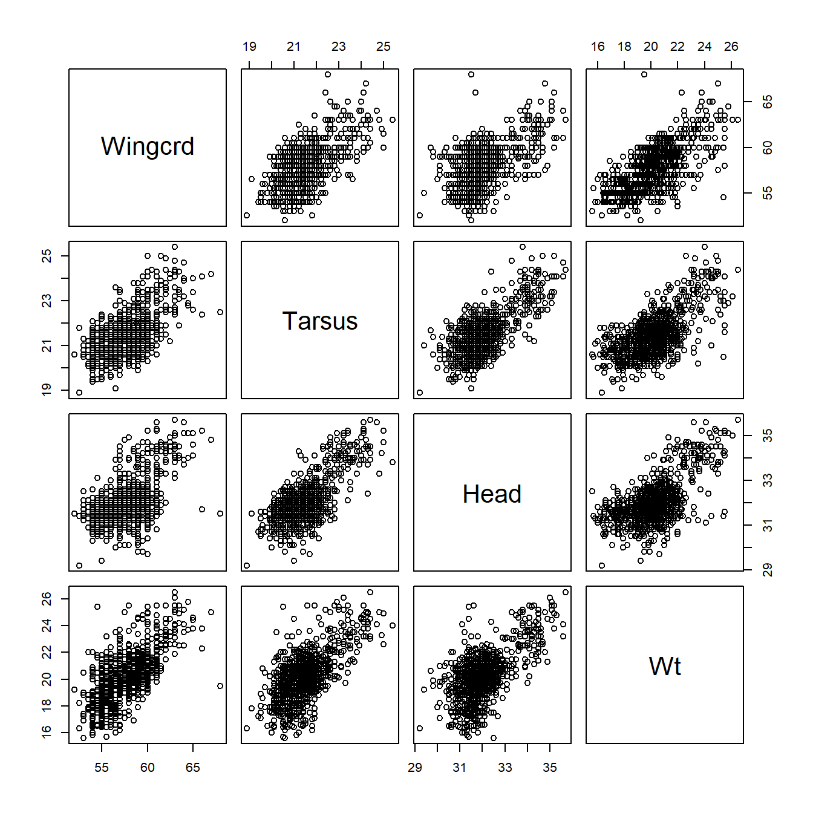
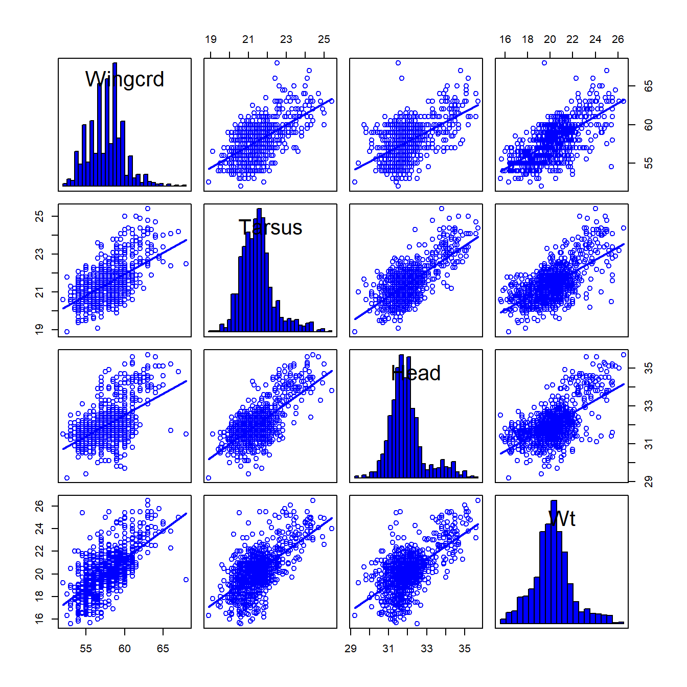
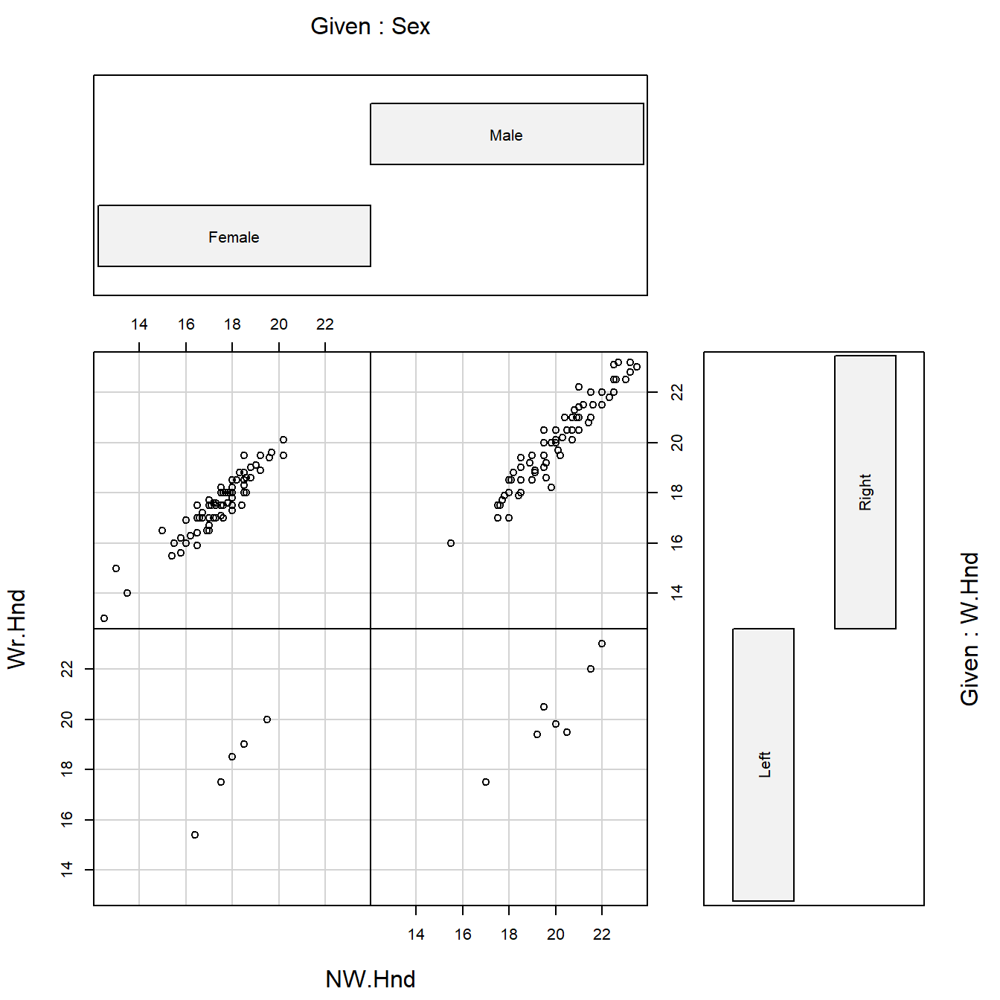
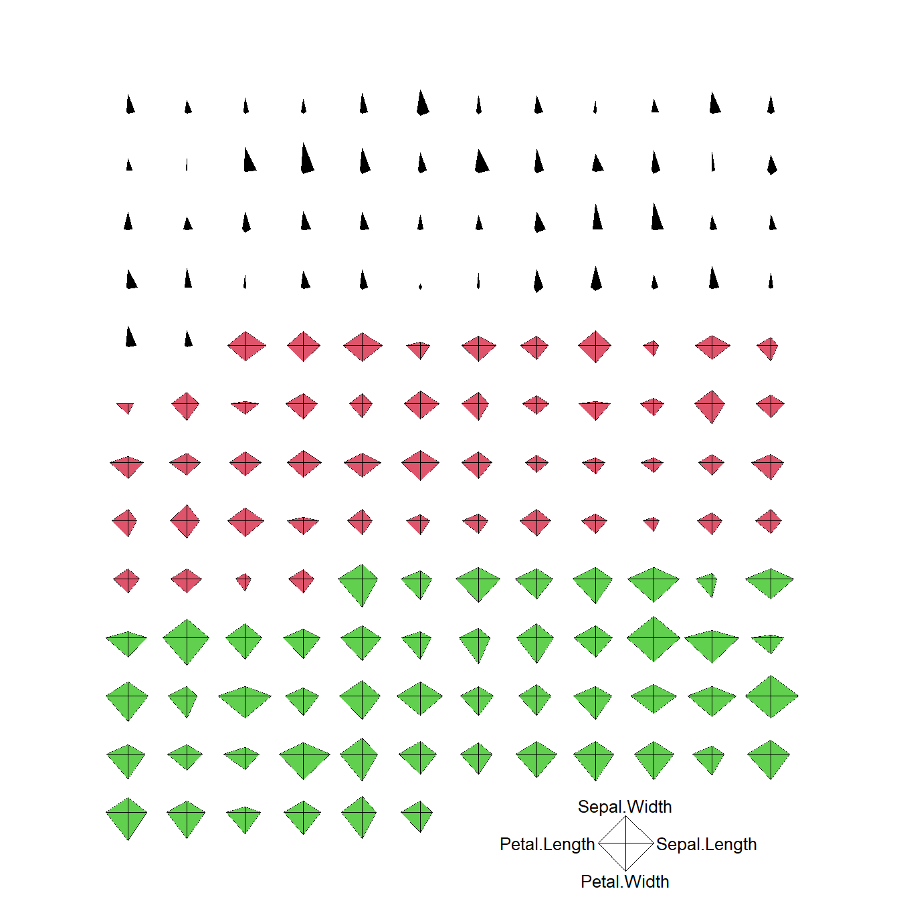
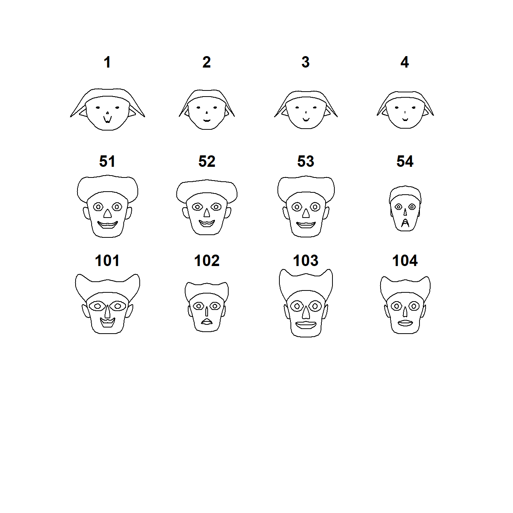

1.3 Representación de datos multivariantes
En el contexto multivariante es conveniente representar las variables aleatorias (o sus valores) en forma matricial. Supongamos que hemos observado \(d\) variables en un conjunto de \(n\) elementos. Cada una de estas \(d\) variables es una variable univariante y el conjunto de las \(d\) variables constituye un vector aleatorio. Los valores del vector aleatorio en cada uno de los \(n\) elementos pueden representarse mediante una matriz de datos \(\bm{X}\) de tamaño \(n\times d\) de manera que \(\bm{X}=(x_{ij})\), donde el índice \(i=1\ldots,n\) representa el individuo y el índice \(j =1,\ldots,d\) representa la variable. Es decir, cada fila de la matriz representa el valor del vector aleatorio (formado por las \(d\) variables) sobre el individuo \(i\).
\[\bm{X}=\left(\begin{array}{cccc}x_{11}&x_{12}&\ldots&x_{1d}\\ x_{21}&x_{22}&\ldots&x_{2d}\\ \vdots&\vdots&\ddots&\vdots\\ x_{n1}&x_{n2}&\ldots&x_{nd}\end{array}\right)=\left(\begin{array}{c}\bm{x_1}^\prime{}\\ \bm{x_2}^\prime{}\\ \vdots \\ \bm{x_n}^\prime{} \end{array}\right).\]
Ejemplo. Se analizaron las variables del estudio del gorrión pantanero carileonado en una muestra de 979 gorriones de dicha especie.
Los datos se encuentran recogidos en el fichero gorrion.txt y se
pueden leer en R como se muestra a continuación.
> gorrion <- read.table("data/gorrion.txt", header = TRUE)
> gorrion
Sex Wingcrd Tarsus Head Wt
1 Male 58.0 21.7 32.7 20.3
2 Female 56.5 21.1 31.4 17.4
3 Male 59.0 21.0 33.3 21.0
4 Male 59.0 21.3 32.5 21.0
...El conjunto de datos se puede representar mediante una matriz de 979 filas (número de individuos en la muestra) y 5 columnas (número de variables).
El objeto utilizado en R para almacenar datos de este tipo es un
data.frame. Podremos editar los datos fácilmente utilizando el comando fix o
edit.
A continuación se muestra parte de uno de los muchos conjuntos de datos
multivariantes que puedes encontrar en R. Se trata del conjunto de datos
survey (librería MASS).
Ejemplo. El conjunto de datos survey (librería MASS) corresponde a
un cuestionario que se realizó a 237 estudiantes de Estadística de la
Universidad de Adelaida. Entre las variables recogidas hay variables
cualitativas (como el sexo, mano con la que escribe, etc.) y variables
cuantitativas (anchura de la mano con la que escribe, anchura de la mano
con la que no escribe, etc.) Puedes consultar más información sobre este
conjunto de datos escribiendo help(survey) en la consola de comandos.
> library(MASS)
> data(survey)
> survey
Sex Wr.Hnd NW.Hnd W.Hnd Fold Pulse Clap Exer Smoke Height M.I
1 Female 18.5 18.0 Right R on L 92 Left Some Never 173.00 Metric
2 Male 19.5 20.5 Left R on L 104 Left None Regul 177.80 Imperial
3 Male 18.0 13.3 Right L on R 87 Neither None Occas NA <NA>
4 Male 18.8 18.9 Right R on L NA Neither None Never 160.00 Metric
5 Male 20.0 20.0 Right Neither 35 Right Some Never 165.00 Metric
6 Female 18.0 17.7 Right L on R 64 Right Some Never 172.72 Imperial
7 Male 17.7 17.7 Right L on R 83 Right Freq Never 182.88 Imperial
8 Female 17.0 17.3 Right R on L 74 Right Freq Never 157.00 Metric
9 Male 20.0 19.5 Right R on L 72 Right Some Never 175.00 Metric
...1.3.1 Visualización de datos multivariantes
Uno de los problemas con que nos encontramos a la hora de establecer métodos gráficos para describir datos multivariantes es nuestro propio sistema de percepción visual. Los gráficos de dispersión en dos dimensiones son fáciles de entender. Somos también capaces de interpretar gráficos de dispersión en tres dimensiones. Sin embargo, cuando la dimensión es mayor necesitamos otros procedimientos para visualizar los datos.
Ejemplo. Diagrama de dispersión para los datos de tamaño del ala
(Wingcrd), longitud de tarso (Tarsus) y tamaño de la cabeza (Head) de
gorrión. La función scatterplot3d de la librería scatterplot3d R
permite hacer un gráfico como el que se muestra en la Figura 1.1
> library(scatterplot3d)
> scatterplot3d(gorrion[, 2:4], color = 4, main = "Diagrama de dispersión 3D.")
Figura 1.1: Diagrama de dispersión 3D.
También se pueden crear diagramas de dispersión en 3D interactivos
usando al función plot3d de la librería rgl, como se indica a
continuación:
Una forma de representar datos multivariantes es mediante matrices de diagramas de dispersión. Se construye una cuadrícula con tantas filas y columnas como variables. En cada casilla se representa el diagrama de dispersión de las variables de la fila y columna correspondientes. Este gráfico informa por lo tanto de cómo son las relaciones entre variables, pero sólo dos a dos. En la Figura 1.2 se muestran matrices de diagramas de dispersión para los datos de gorrión.
Ejemplo. Matrices de diagramas de dispersión para los datos de
gorrión. La función pairs de R permite hacer un gráfico como el que se
muestra en la izquierda.
La función scatterplotMatrix de la librería car permite además
añadir en la diagonal los histogramas, boxplots, estimadores de la
densidad, etc. de las variables del conjunto de datos. También permite
añadir en cada gráfico el ajuste de regresión lineal o no paramétrico
para cada par de variables. Consulta la ayuda de la función para obtener
más información.
> pairs(gorrion[, 2:5])
> library(car)
> scatterplotMatrix(gorrion[, 2:5], diagonal = list(method = "histogram", breaks = "FD"),
+ smooth = FALSE, regLine = TRUE)

Figura 1.2: Matrices de diagramas de dispersión para los datos de gorrión.
Cuando en un conjunto de datos tenemos diferentes variables categóricas,
puede ser interesante visualizar las relaciones entre pares de variables
teniendo en cuenta los distintos factores de las variables categóricas.
Podemos en este caso representar gráficos de dispersión
condicionales como el que se muestra en la Figura 1.3 para
los datos survey.
Ejemplo. Gráfico de dispersión condicional para los datos survey.
La función coplot nos permite visualizar la relación entre el ancho de
la mano con la que se escribe (variable Wr.Hnd) y el ancho de la mano
con la que no se escribe (variable NW.Hnd), en función del sexo
(variable Sex) y de la lateralidad (variable W.Hnd) del individuo.

Figura 1.3: Gráfico de dispersión condicional para los datos de lateralidad.
Otra herramienta utilizada para representar datos multivariantes son los gráficos de estrellas. Cada individuo se representa en una estrella, con tantos rayos o ejes como variables queramos representar. Cada eje representa el valor de la variable re-escalada de manera independiente entre variables. Se muestra en la Figura 1.4 el gráfico de estrellas para los datos de iris. A la vista de los gráficos de estrella podemos identificar perfectamente las diferentes especies de iris, representadas a su vez con distintos colores. Como conclusión, parece que las medidas consideradas (longitud y anchura de pétalo y sépalo) nos servirían para distinguir unas especies de otras.
Ejemplo. Gráfico de estrellas para los datos iris obtenido con la
función stars de R. Cada estrella representa una flor.

Figura 1.4: Gráfico de estrellas para los datos de iris.
También es común representar datos multivariantes mediante gráficos de caras de Chernoff. El gráfico de caras de Chernoff es como un gráfico de estrellas, pero cada individuo ahora se representa en una cara y las variables en los rasgos físicos (altura y anchura de la cara, forma de la cara, altura y anchura de la boca, curva de la sonrisa, altura y anchura de ojos, ...). En la Figura 1.5 se representa el gráfico de caras de Chernoff para un subconjunto de los datos de iris.
Ejemplo. Gráficos de caras de Chernoff para un subconjunto de los
datos iris obtenido con la función faces de la librería aplpack de
R. Cada cara representa una flor. Elegimos 4 flores de cada una de las
especies (setosa, versicolor, virginica).
> library(aplpack)
> faces(iris[c(1:4, 51:54, 101:104), 1:4], face.type = 0)
effect of variables:
modified item Var
"height of face " "Sepal.Length"
"width of face " "Sepal.Width"
"structure of face" "Petal.Length"
"height of mouth " "Petal.Width"
"width of mouth " "Sepal.Length"
"smiling " "Sepal.Width"
"height of eyes " "Petal.Length"
"width of eyes " "Petal.Width"
"height of hair " "Sepal.Length"
"width of hair " "Sepal.Width"
"style of hair " "Petal.Length"
"height of nose " "Petal.Width"
"width of nose " "Sepal.Length"
"width of ear " "Sepal.Width"
"height of ear " "Petal.Length"
Figura 1.5: Gráfico de caras de Chernoff para un subconjunto de los datos de iris.
1.3.2 Vector de medias y matriz de covarianzas muestrales
Supongamos que disponemos de una muestra aleatoria \(\bm{x_1},\ldots, \bm{x_n}\) de un vector aleatorio en \(\mathbb{R}^d\) con media \(\bm\mu\) y matriz de covarianzas \(\bm\Sigma\). De forma análoga al caso univariante, calcularemos el vector de medias muestral como \[\overline{\bm{x}}=\frac{1}{n}\sum_{i=1}^n{\bm{x_i}}=\frac{1}{n}\bm{X}^\prime{}\bm{1_n}.\] Recuerda que, según la notación establecida, \(\bm{x_i}=(x_{i1},\ldots,x_{id})^\prime{}\) y \(\bm{X}\) es la matriz de datos.
Ejemplo. Trabajaremos ahora con variables numéricas del estudio del gorrión pantanero carileonado.
> gmed <- gorrion[, 2:5]
> gmed
Wingcrd Tarsus Head Wt
1 58.0 21.7 32.7 20.3
2 56.5 21.1 31.4 17.4
3 59.0 21.0 33.3 21.0
4 59.0 21.3 32.5 21.0
...Calculamos el vector de medias muestral a partir de la matriz de
observaciones. Podemos hacerlo de varias maneras. A través de la función
summary.
> summary(gmed)
Wingcrd Tarsus Head Wt
Min. :52.00 Min. :18.90 Min. :29.20 Min. :15.60
1st Qu.:56.00 1st Qu.:20.90 1st Qu.:31.50 1st Qu.:19.20
Median :58.00 Median :21.40 Median :31.90 Median :20.20
Mean :57.87 Mean :21.48 Mean :32.04 Mean :20.23
3rd Qu.:59.00 3rd Qu.:21.90 3rd Qu.:32.40 3rd Qu.:21.10
Max. :68.00 Max. :25.40 Max. :35.70 Max. :26.50 A través de la función apply.
A través de la matriz de observaciones.
> n <- dim(gmed)[1]
> un <- matrix(1, nr = n, nc = 1)
> t(gmed) %*% un/n
[,1]
Wingcrd 57.86599
Tarsus 21.47620
Head 32.03790
Wt 20.22646La matriz de covarianzas \(\bm\Sigma\) se estimará mediante
\[\bm{S}=\frac{1}{n}\sum_{i=1}^n\left(\bm{x_i}-\overline{\bm{x}}\right)\left(\bm{x_i}-\overline{\bm{x}}\right)^\prime{}.\] La matriz de covarianzas muestral \(\bm{S}\) es una matriz cuadrada y simétrica que contiene en la diagonal las varianzas muestrales y fuera de la diagonal las covarianzas muestrales entre los distintos pares de variables. Es decir
\[\bm{S}=\left(\begin{array}{cccc}s_1^2&s_{12}&\ldots&s_{1d}\\ s_{21}&s_{2}^2&\ldots&s_{2d}\\ \vdots&\vdots&\ddots&\vdots\\ s_{d1}&s_{d2}&\ldots&s_{d}^2\end{array}\right),\] siendo
\[s_{jk}=\frac{1}{n}\sum_{i=1}^n(x_{ij}-\overline{x}_j)(x_{ik}-\overline{x}_k)\] Las varianzas muestrales \(s_{jj}\) se denotan \(s_j^2\). La matriz de correlaciones muestral \(\bm R\) se obtendrá dividiendo las covarianzas muestrales por las desviaciones típicas de cada par de variables. Es decir,
\[\bm{R}=\left(\begin{array}{cccc}1&r_{12}&\ldots&r_{1d}\\ r_{21}&1&\ldots&r_{2d}\\ \vdots&\vdots&\ddots&\vdots\\ r_{d1}&r_{d2}&\ldots&1\end{array}\right),\] siendo
\[r_{jk}=\frac{s_{jk}}{s_js_k}.\]
De forma análoga al caso poblacional,
\[\bm{R}=\bm{D_S}^{-1}\bm{S}\bm{D_S}^{-1}\] siendo ahora \(\bm{D_S}=\textnormal{diag}(s_1,\ldots,s_d)\), es decir, la matriz diagonal de orden \(d\) construida colocando en la diagonal principal las desviaciones típicas muestrales de las variables. Equivalentemente,
\[\bm{S}=\bm{D_S}\bm{R}\bm{D_S}.\]
Ejemplo. Volvemos al conjunto de datos de iris. Calculamos, para la especie setosa, el vector de medias muestral, la matriz de covarianzas muestral y la matriz de correlaciones muestral. Debemos tener en cuenta que R calcula la matriz de covarianzas muestral corregida \[\frac{1}{n-1}\sum_{i=1}^n\left(\bm{x_i}-\overline{\bm{x}}\right)\left(\bm{x_i}-\overline{\bm{x}}\right)^\prime{}.\]
> setosa <- iris[iris$Species == "setosa", 1:4]
> colMeans(setosa)
Sepal.Length Sepal.Width Petal.Length Petal.Width
5.006 3.428 1.462 0.246 > cov(setosa) # Matriz de covarianzas muestral corregida
Sepal.Length Sepal.Width Petal.Length Petal.Width
Sepal.Length 0.12424898 0.099216327 0.016355102 0.010330612
Sepal.Width 0.09921633 0.143689796 0.011697959 0.009297959
Petal.Length 0.01635510 0.011697959 0.030159184 0.006069388
Petal.Width 0.01033061 0.009297959 0.006069388 0.011106122> cor(setosa)
Sepal.Length Sepal.Width Petal.Length Petal.Width
Sepal.Length 1.0000000 0.7425467 0.2671758 0.2780984
Sepal.Width 0.7425467 1.0000000 0.1777000 0.2327520
Petal.Length 0.2671758 0.1777000 1.0000000 0.3316300
Petal.Width 0.2780984 0.2327520 0.3316300 1.0000000Comprobamos que la matriz de correlaciones muestral también se puede calcular como \(\bm{R}=\bm{D_S}^{-1}\bm{S}\bm{D_S}^{-1}\).
> desviaciones <- apply(setosa, 2, sd)
> Dinv <- solve(diag(desviaciones))
> Dinv %*% cov(setosa) %*% Dinv
[,1] [,2] [,3] [,4]
[1,] 1.0000000 0.7425467 0.2671758 0.2780984
[2,] 0.7425467 1.0000000 0.1777000 0.2327520
[3,] 0.2671758 0.1777000 1.0000000 0.3316300
[4,] 0.2780984 0.2327520 0.3316300 1.0000000Algunos de los resultados que veremos irán encaminados a la obtención de la distribución de \(\overline{\bm{x}}\) y \(\bm{S}\) en este contexto multidimensional y bajo la hipótesis de normalidad.